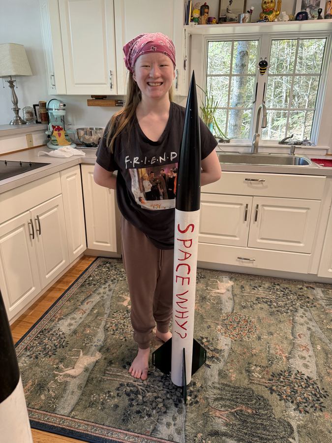
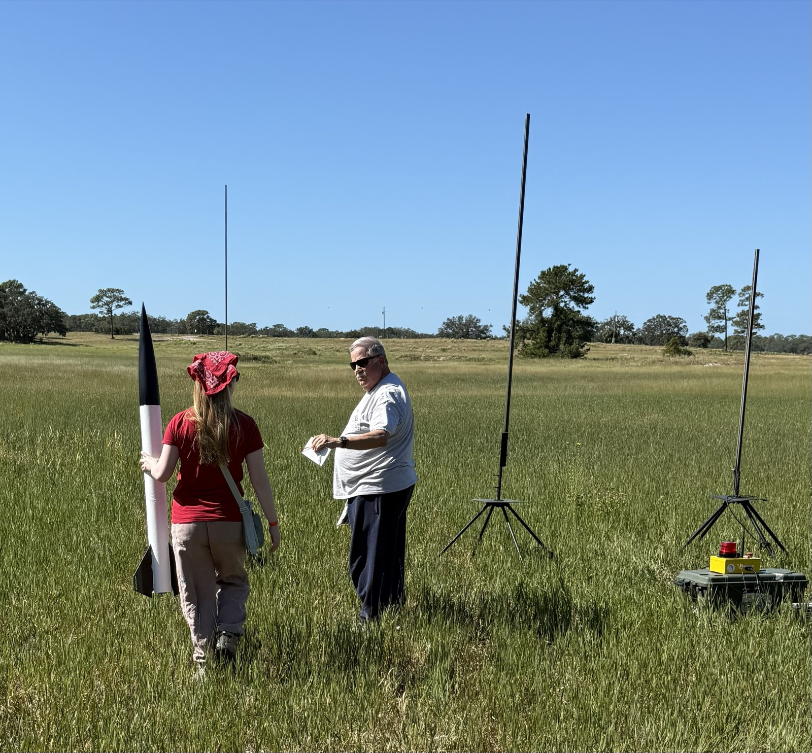
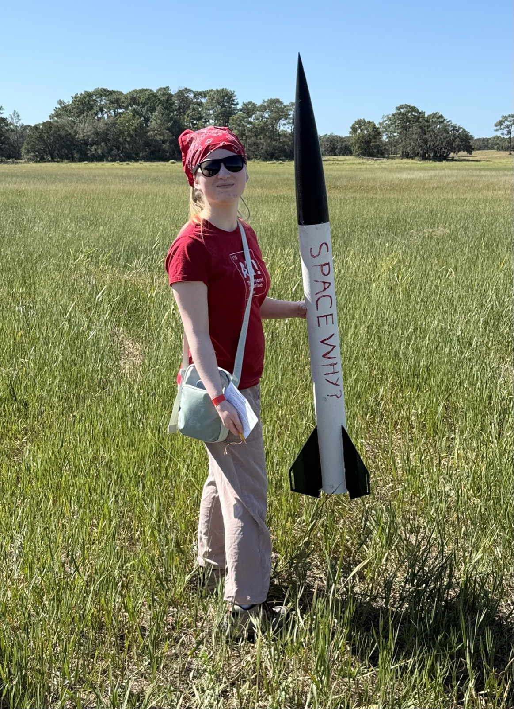
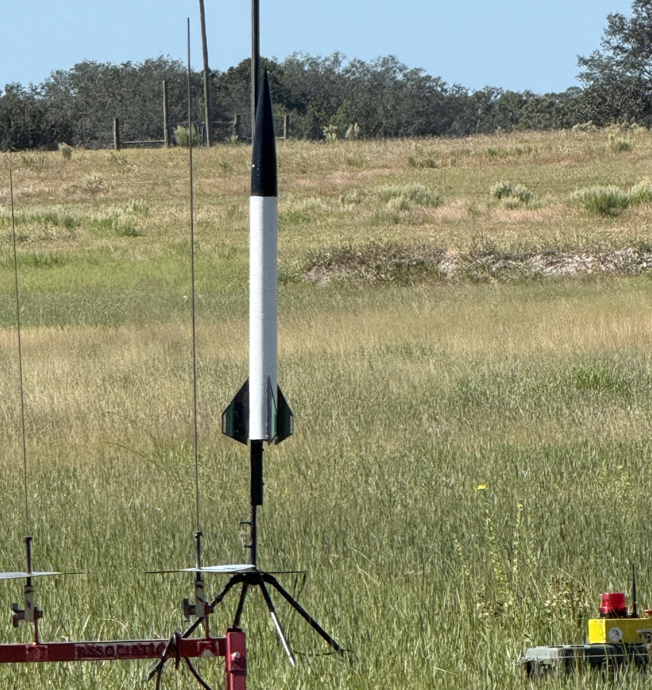
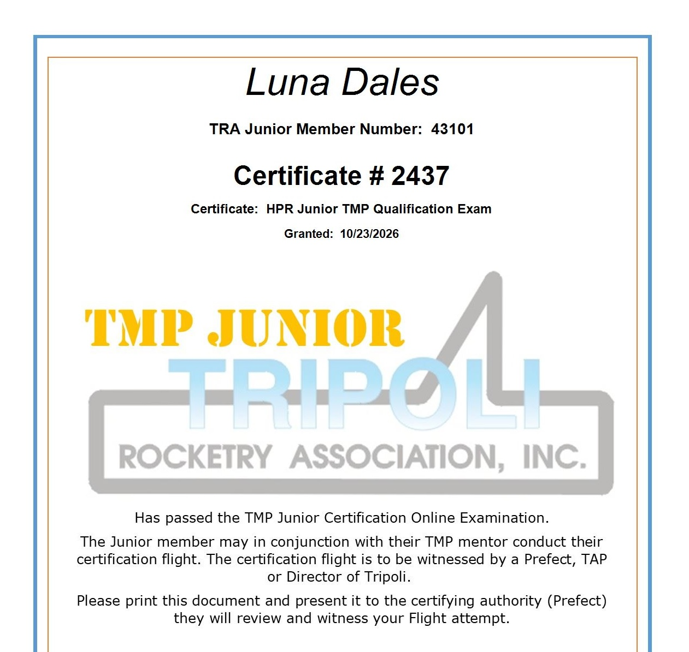
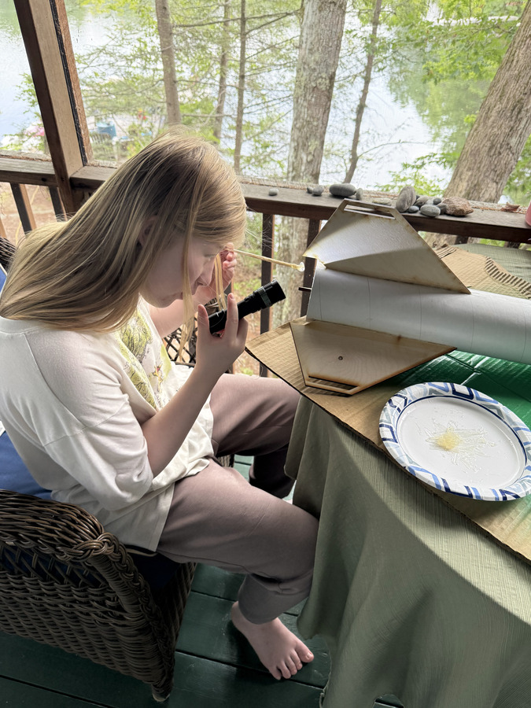
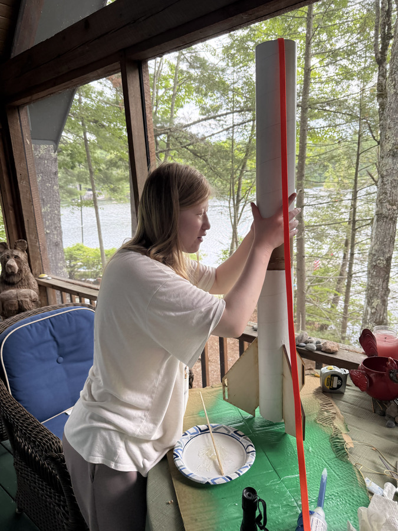

02 / Rocket construction and simulation
L1 Zephyr
I built and flew the Zephyr to earn my Tripoli Rocketry Association (TRA) Junior High Power Rocketry (HPR) Level 1 (L1) certification.
NAR and Tripoli exams passed · Rocket built · Simulations completed · Certification flight completed · Tripoli certification earned

Building a Zephyr rocket
I first passed the National Association of Rocketry (NAR) Junior Level 1 exam and built a Zephyr rocket for my certification flight. We attended two club launch events, but the weather prevented me from completing the flight.
Building the Zephyr gave me experience using epoxy to build a larger rocket with stronger assemblies.
I later took and passed the Tripoli Rocketry Association (TRA) Junior HPR exam. This time, the weather cooperated: I flew the Zephyr with Tripoli and earned my Junior HPR Level 1 certification. Read about the Tripoli Junior HPR Level 1 program.
Tripoli certification flight
Flight day with the Zephyr
Photos from the Tripoli launch where I completed my Junior HPR Level 1 certification flight.






Watch the certification flight
Another view of the certification flight
Certification milestone
Passing the NAR and Tripoli exams
I passed the NAR Junior Level 1 exam before weather delayed my certification flight. I then passed Tripoli’s Junior HPR exam and completed my certification flight with Tripoli. The certificate shown here is from the Tripoli exam.


Construction in progress


Simulation / Predicted results
Checking stability and altitude before launch
I used RocketSim and OpenRocket to predict stability and flight altitude, as required by the local club.
The supplied H100W simulation report gives the following predictions for its modeled conditions. These are simulation outputs, not measured flight results.
Predicted maximum altitude
- Time to apogee
- 10.666 s
- Launch-guide departure speed
- 36.91 mph
- Launch-guide length
- 72 in
The report describes a positive prelaunch static margin and sufficient modeled speed at launch-guide departure. These checks are preflight predictions. Measured flight results have not been added to this page.
Flight outcome
Tripoli certification earned
I completed the Zephyr certification flight with Tripoli and earned my Junior HPR Level 1 certification, bringing together the exam, construction, and flight portions of the project.
Explore Flying Blind